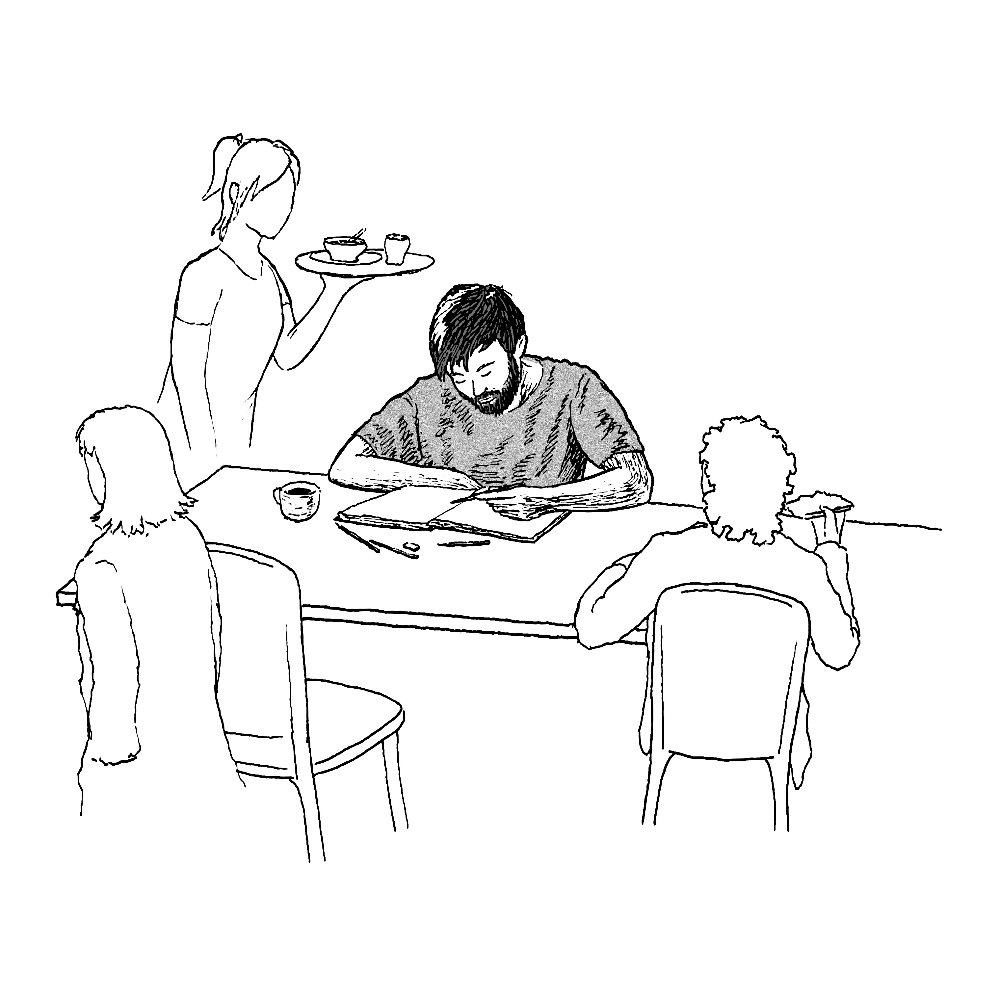
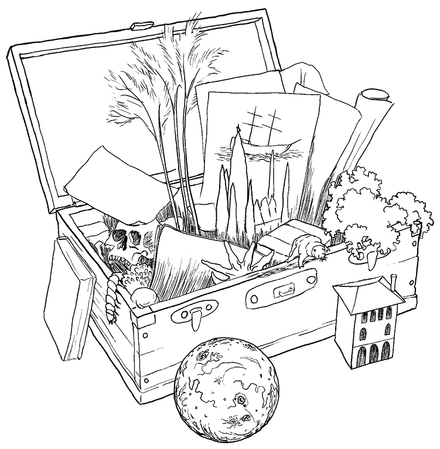
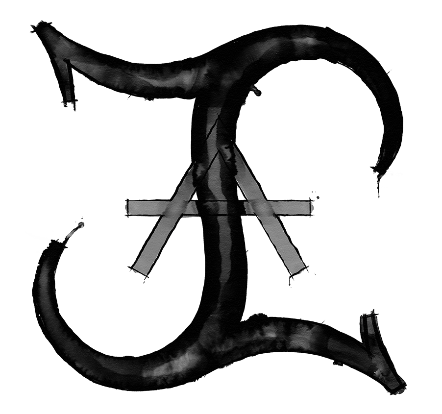

This is me

Sitting in a café
Somewhere in Amsterdam, Melbourne, New York, wherever. I often sit there for hours seeing the people come and go as I slowly work on a drawing. People will stop and come over, asking if I make comics, starting a conversation or simply saying that they like my style. Sometimes I convince one of my friends to sit there with me.
But mostly I'm on my own, listening to whatever is going on around me. A dad trying to keep his kids at bay as he orders them chocolate milk. A group of teenagers talking about who said what. Two old men talking about their favourite recipe.
I have a big box in my mind where I put these memories in, together with sights and feelings and dreams and expressions. Every drawing I make starts with this box, and my special trick is to combine items that normally wouldn't fit well together. I like complexity and nuance. Lots of fantasy, yes, but nuance in what kind of message or feeling you might find through my art.

Right now I live in Delft and I work as an intern at Powerhouse Company, before I finish my masters Architecture next year. I’m not sure what I want in the future but I know I’ll keep drawing and adding to my collection on this site, so definitively come back later. Of course, you can also follow me on social media (down below) to get updates on the latest works and upcoming projects.
Do you want to commission an original piece of art or have other questions? You can send a mail to imres.ink@gmail.com. An average artwork takes around 10 hours, at a rate of €15 an hour. This rate is flexible depending on the project, some projects are simply worth working a little more on free of charge!
